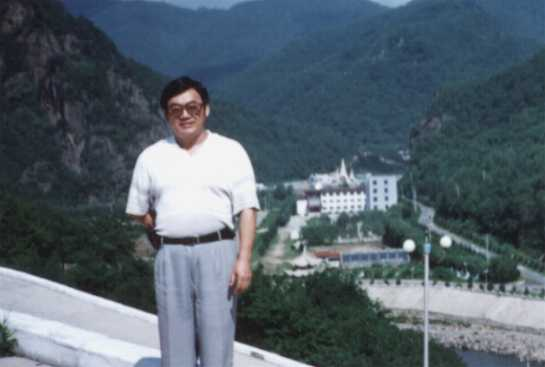

孙永清，男，现年四十六岁，祖籍吉林省东丰县，出身于中医世家。中国医科大学函授毕业，1992年首创中医眩晕科，现任中国益元医药研究所副所长、研究员、香港新闻出版局医事顾问、中国国际交流中心顾问编委。95年起开展眩晕头痛的医疗协作，已与全国廿余家医疗单位建立协作关系，其发明的《眩即停》中药系列对梅尼埃病（美尼尔氏病）、前庭功能障碍、颈椎病、血管神经性头痛有特效，治愈率在94%—97%之间。其中《眩即停》中药贴于95年初获国家专利。同年七月获中国传统医药博览会最高奖“华佗奖”。目前已治愈患者三万余人，遍布20多个国家和地区。其中有将军、学者、政要、外国驻华使节和医学界名流。《眩即停》出色的疗效被医学界称为“突破性进展”。结束了以梅尼埃病为代表的周围性眩晕是疑难症的历史。发明者亦被收录入《中国大陆名医大典》等多部典籍中。
